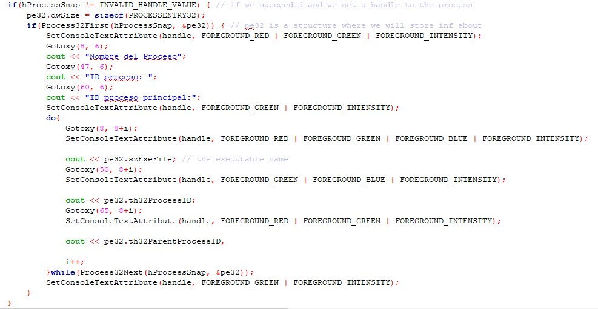
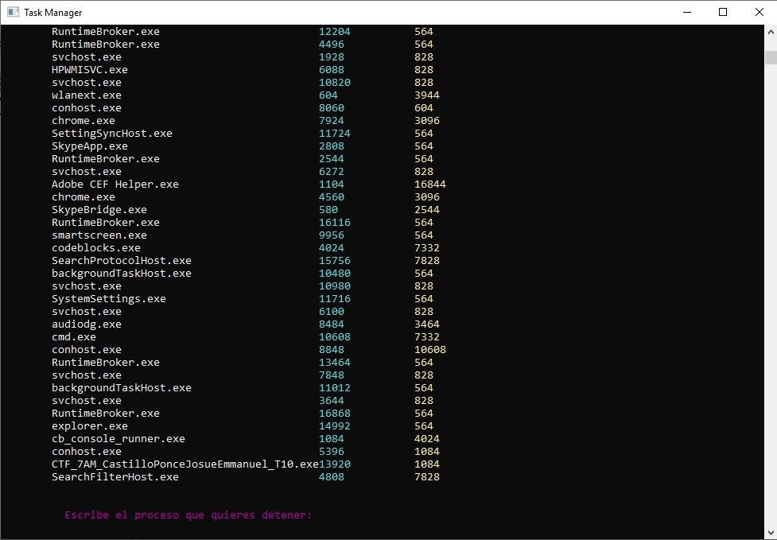
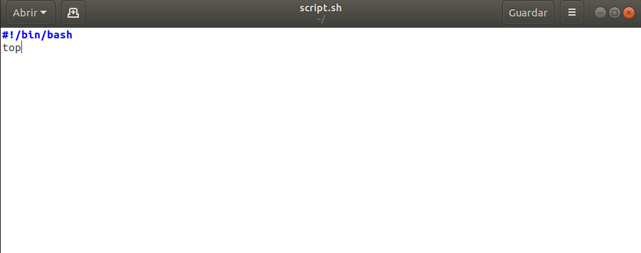
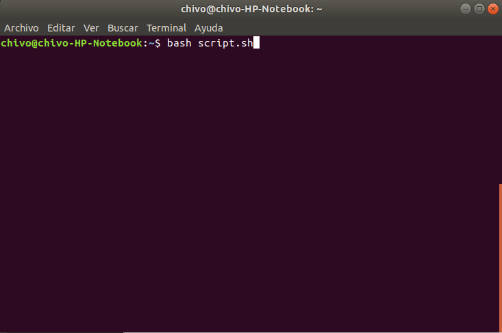
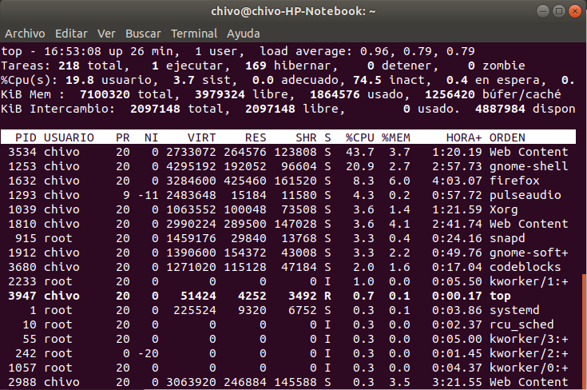

Objetivo: Desarrollar un programa para ver los servicios de Windows y Linux
Windows
Linux
Este pequeño programa nos permite realizar la función del Administrador de Tareas en Windows, por lo que nos muestra los servicios que se encuentran en ejecución durante la ejecución del programa
Este es el código
El resultado es un programa en consola que muestra los servicios de la siguiente manera
Este programa nos ayuda, apatrte de mostrar los programas, también tiene la posibilidad de "matar" los procesos indicandole el ID del servicio
Las posibilidades en Linux son grandes, y nos permite facilitarnos tareas que en otro Sistema operativo nos costaría más trabajo
En las siguientes imágenes veremos la creación de un script en linux que nos permitirá ejecutar desde la terminal, haciendo correr los comandos y permitiendonos mostrar los servicios de Linux en ejecución
Lo primero es crear el script, para ello, creamos un archivo, le ponemos de nombre "script.sh" (muy importante la extensión, ya que nos permitirá ser leído por la terminal).
Acto seguido, procederemos a abrir la terminal y a dirigirnos a la carpeta en la cual se encuentra nuestro script, para poder correrlo.
Una vez ubicados desde la terminal en la ubicación del script, procederemos a escribir "bash script.sh", el cual nos ayudará a correr el script y con ellos los comandos que hayamos escrito
Ya que lo hayamos escrito, damos enter y automáticamente correrá el Script. El resultado de ese script es que nos mostrará en la terminal los servicios que se encontrarán en ejecución, así como las diferentes opciones que nos permite hacer la instrucción
